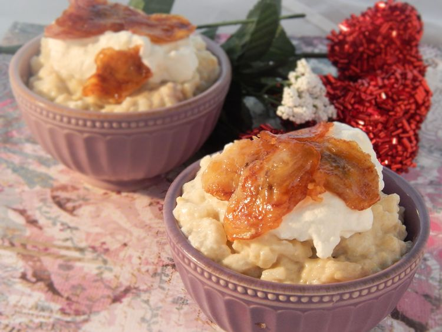

Recipes Main
Mexican Lasagna - No Lasagna Noodles
Harissa Butternut Squash Soup
Japanese Banana Rice Pudding

Description
Yummy Japanese dessert and comfort food, good served cold or hot. Japanese
desserts are not too sweet, more like European-style.
Ingredients
- 2 bananas
- 1 tablespoon white sugar
- 1 cup milk
- 1 cup cooked short-grain white rice
- 2 egg yolks
- 3 tablespoons white sugar
- 2 tablespoons butter, melted
- 1 pinch salt
- ½ cup whipped cream
Directions
- Slice 1/2 of 1 banana and sprinkle 1 tablespoon sugar over it.
- Chop the remaining bananas and place in a skillet over medium heat; stir and mash until bananas become heated through, are slightly browned, and hold together in 1 ball, 5 to 10 minutes. Remove from heat.
- Mix milk, rice, egg yolks, 3 tablespoons sugar, butter, and salt together in a saucepan over low heat until slightly thickened and steamy, 2 to 3 minutes. Stir in mashed bananas until well blended and heated through. Remove from heat and refrigerate rice pudding until slightly cooled, at least 15 minutes.
- Stir whipped cream into rice pudding until well blended.
- Heat a skillet over medium heat; cook and stir sugared banana slices until sugar has melted and caramelized, 2 to 4 minutes. Spoon over rice pudding.
Nutritional Facts
- 287 Calories
- 11g Fat
- 43g Carbs
- 5g Protein